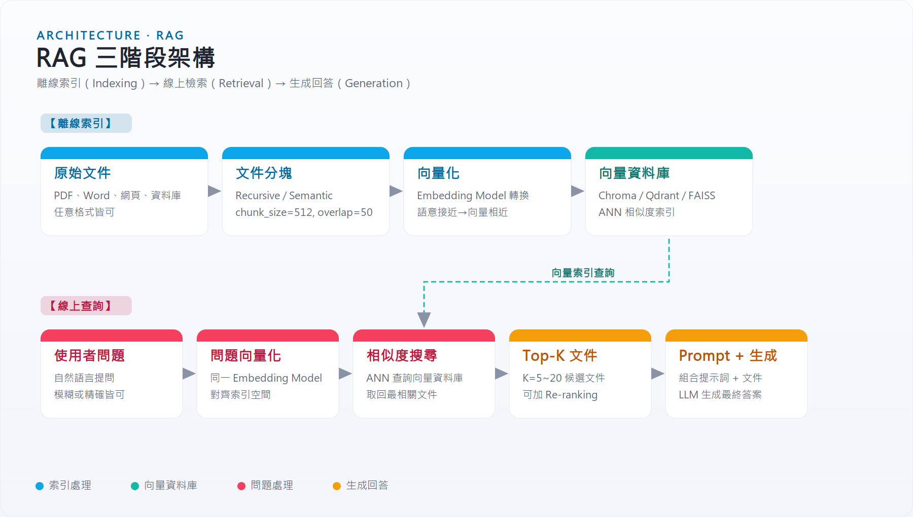
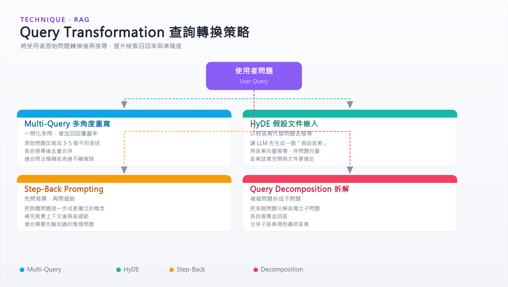

RAG 完整指南：檢索增強生成的原理、架構與實作¶
摘要¶
大型語言模型（LLM）天生有兩個限制：知識截止日與幻覺。RAG（Retrieval-Augmented Generation，檢索增強生成）是目前業界最主流的解決方案——在生成答案之前，先從外部知識庫撈出相關文件，再把它們塞進 Prompt，讓模型「有憑有據」地回答。
| 維度 | 純 LLM | RAG |
|---|---|---|
| 知識來源 | 訓練資料（固定） | 外部知識庫（可更新） |
| 幻覺風險 | 高 | 低（有文件支撐） |
| 可追溯性 | 無 | 可引用來源 |
| 更新成本 | 重新訓練（高） | 更新索引（低） |
| 延遲 | 低 | 較高（多一次檢索） |
RAG 不是萬能的。它適合「知識密集型」任務（文件問答、客服、法規查詢），不適合純推理或創作任務。
為什麼需要 RAG¶
LLM 在訓練後知識便固定下來。面對以下情境，單靠模型本身無法可靠回答：
- 時效性問題：「今天台股大盤收幾點？」
- 私有領域知識：公司內部文件、個人筆記、私有資料庫
- 長尾細節：訓練資料中罕見的專業技術文件
- 可信度要求：需要引用具體來源的法律、醫療場景
RAG 的核心思路：不改模型，改 Prompt。把外部知識即時注入 Prompt，讓模型用提供的文件作答，而不是憑記憶猜測。
RAG 三階段架構¶

整個 RAG 系統分為兩個時間維度：
離線（Indexing）：資料準備階段，只需執行一次（或增量更新）。
線上（Query → Retrieve → Generate）：每次用戶提問都會走一遍。
[離線] Document → Chunk → Embed → Vector DB
↓
[線上] Query → Embed → 相似度搜尋 → Top-K Chunks → Prompt → LLM → Answer
第一階段：索引（Indexing）¶
1.1 文件載入（Document Loading）¶
原始文件格式多元，需轉換為純文字：
| 格式 | 工具 |
|---|---|
pypdf, pdfplumber, unstructured |
|
| Word/Excel | python-docx, openpyxl |
| HTML/網頁 | BeautifulSoup, Playwright |
| 資料庫 | SQL → 文字摘要 |
| 程式碼 | 直接讀取 + AST 解析 |
1.2 文件分塊（Chunking）¶
文件通常比 LLM 的 context window 大，必須切分。切法直接影響檢索品質。
| 策略 | 原理 | 適用場景 |
|---|---|---|
| Fixed-size | 每 N 個 token 切一塊 | 快速原型 |
| Sentence | 以句子為邊界 | 連貫性要求高 |
| Recursive | 遞迴嘗試段落→句→字符 | 通用首選（LangChain 預設） |
| Semantic | 依語意相似度決定邊界 | 效果好但成本高 |
| Document-specific | 利用 Markdown/HTML 結構 | 有結構的技術文件 |
重疊（Overlap）：相鄰 chunk 保留一段重疊文字，避免跨邊界的重要資訊被切斷。常見設定：chunk_size=512, overlap=50。
1.3 嵌入（Embedding）¶
用 Embedding Model 把每個 chunk 轉成向量，語意相近的 chunk 向量距離相近。
| 模型 | 特性 |
|---|---|
text-embedding-3-small (OpenAI) |
便宜、快速，適合一般用途 |
text-embedding-3-large (OpenAI) |
準確率高，成本較高 |
nomic-embed-text |
本機部署，免 API 費 |
bge-m3 |
多語言支援強（含中文） |
重點：查詢與文件必須用同一個 Embedding Model。
1.4 向量資料庫（Vector Database）¶
儲存向量並支援快速近似最近鄰搜尋（ANN）。
| 工具 | 特性 | 適用規模 |
|---|---|---|
| Chroma | 本機輕量，零設定 | 原型、個人專案 |
| FAISS | Meta 開源，純記憶體，超快 | 研究、離線批次 |
| Qdrant | 自架或雲端，過濾能力強 | 中大型生產 |
| Pinecone | 全託管，無需維運 | 快速上線 |
| pgvector | PostgreSQL 外掛，SQL+向量合一 | 已有 PG 基礎設施 |
| Weaviate | 圖譜+向量混合 | 需關係查詢 |
第二階段：檢索（Retrieval）¶
2.1 基礎向量檢索¶
用戶問題 → Embed → 向量相似度搜尋 → 取回 Top-K chunks。
相似度計算方式：
- Cosine Similarity（方向相似，最常用）
- Dot Product（向量已正規化時等同 Cosine）
- L2 Distance（歐氏距離，適合密集向量）
2.2 混合搜尋（Hybrid Search）¶
純向量搜尋對精確關鍵字（如人名、型號）不如傳統關鍵字搜尋（BM25）。混合搜尋結合兩者：
或使用 RRF（Reciprocal Rank Fusion） 合併排名，不需調 α。
2.3 Query Transformation（查詢轉換）¶
用戶的原始問題往往措辭不佳，轉換後再搜尋效果更好：

Multi-Query：讓 LLM 把一個問題改寫成 3-5 個不同角度的問法，分別搜尋再去重。適合問題表達不精確的情境。
# 概念示意
original_query = "RAG 效果不好怎麼辦？"
generated_queries = llm.generate([
"RAG 系統準確率低的原因",
"如何提升 RAG 檢索召回率",
"Retrieval-Augmented Generation 常見問題",
])
HyDE（Hypothetical Document Embedding）：讓 LLM 先假設一個理想答案，用答案去搜尋而非用問題搜尋。因為答案的語意空間與文件更接近。
Step-Back Prompting：先問更廣泛的背景問題（step-back），再搜尋，增加相關上下文。
Query Decomposition：把複雜問題拆解為子問題，各自搜尋後合併答案。
2.4 重排序（Re-ranking）¶
初次 Top-K 結果（如 Top-20）可能順序不對，用更精準（但更慢）的 Cross-Encoder 模型重排，再取 Top-5。
常用 Re-ranker：
- cross-encoder/ms-marco-MiniLM-L-6-v2（英文）
- Cohere Rerank API（多語言，SaaS）
- bge-reranker-large（中英文皆可）
第三階段：生成（Generation）¶
3.1 Prompt 設計¶
將檢索到的 chunks 組合進 Prompt，標準模板：
你是一個知識問答助理。請根據以下「參考資料」回答用戶問題。
如果參考資料中沒有足夠資訊，請明確說「資料中未找到相關內容」，不要憑空猜測。
## 參考資料
{retrieved_chunks}
## 用戶問題
{user_query}
## 回答
關鍵設計原則： - 明確限制來源：防止模型混用訓練知識 - 處理無資訊情境：讓模型說「不知道」而非幻覺 - 可引用來源：要求模型標注引用的文件編號
3.2 Context 放置位置¶
研究顯示 LLM 對 Prompt 中間位置的文字注意力最低（Lost in the Middle 現象）。將最相關的文件放在最前面或最後面。
Advanced RAG 技術¶
Naive RAG 的常見問題¶
| 問題 | 原因 | 解法 |
|---|---|---|
| 召回率低 | 問題與文件語意差異大 | HyDE、Multi-Query |
| 精確度低 | Top-K 有雜訊 | Re-ranking |
| 跨文件推理失敗 | 資訊分散在多份文件 | Graph RAG |
| 回答不忠實 | 模型忽視上下文 | Self-RAG |
| 視覺內容遺失 | 文字 parsing 丟棄表格/圖表 | PixelRAG |
Self-RAG¶
讓 LLM 自己決定：「這個問題需要檢索嗎？檢索到的結果有用嗎？我的回答是否忠實於來源？」
引入三個特殊 Token：
- [Retrieve]：判斷是否需要檢索
- [IsRel]：判斷檢索結果是否相關
- [IsSup]：判斷回答是否被來源支持
Graph RAG（Microsoft）¶
傳統 RAG 把文件當孤立片段，無法理解實體之間的關係。Graph RAG 先從文件中抽取實體與關係，建成知識圖譜，再用圖結構做跨文件推理。
適合：大量文件、需要理解複雜關係的場景（如組織架構、因果鏈）。
PixelRAG（Berkeley SkyLab / BAIR）¶
傳統 RAG 把文件 parse 成文字——這個過程會丟棄表格結構、圖表數值、排版資訊。PixelRAG 的做法完全相反：不解析，直接截圖。
核心流程：
文件 / 網頁
↓ pixelshot（Playwright / CDP）
截圖 Tiles（圖片分塊）
↓ Qwen3-VL-Embedding（LoRA fine-tuned on screenshot data）
視覺向量
↓ FAISS 相似度索引
↓ VLM 讀取截圖回答問題
傳統 RAG 碰到「表格第三欄第五行的數值是多少？」這類問題會失敗，因為 HTML parsing 後表格結構已不存在。PixelRAG 保留了整頁的視覺結構，VLM 直接看圖就能找到答案。
技術細節：
- Embedding 模型：Qwen/Qwen3-VL-Embedding-2B，在 Wikipedia 截圖資料上 LoRA fine-tune
- 預建索引：8.28M 筆 Wikipedia 頁面，提供公開 API（api.pixelrag.ai）
- 索引大小：FAISS 索引約 217 GB
快速試用：
pip install pixelrag
# 截圖並搜尋 Wikipedia 預建索引（無需 API key）
pixelshot https://en.wikipedia.org/wiki/Python --output ./tiles
curl -X POST https://api.pixelrag.ai/search \
-H "Content-Type: application/json" \
-d '{"queries": [{"text": "Python 的發明者是誰？"}], "n_docs": 5}'
與 Graph RAG 的差異：
| PixelRAG | Graph RAG | |
|---|---|---|
| 索引的是什麼 | 頁面截圖（像素） | 實體關係圖譜 |
| 解決的問題 | 視覺內容被 parsing 丟失 | 跨文件多跳推理 |
| 讀取模型 | VLM（看圖） | LLM（讀文字+圖譜） |
| 適合場景 | 含大量表格/圖表的文件 | 需理解實體關係的大量文件 |
適合：含豐富視覺結構的文件（財報表格、技術規格書、網頁截圖）。
Corrective RAG（CRAG）¶
加入「反思」步驟：評估檢索到的文件品質。 - 品質高 → 直接生成 - 品質低 → 用搜尋引擎補充 - 模糊 → 混合兩者
RAG 評估框架¶
評估 RAG 系統需要同時衡量檢索品質與生成品質。
RAGAS 指標¶
| 指標 | 評估對象 | 含義 |
|---|---|---|
| Faithfulness | 生成 | 答案是否完全基於檢索到的上下文（不幻覺） |
| Answer Relevancy | 生成 | 答案是否回應了用戶問題 |
| Context Precision | 檢索 | 檢索到的文件有多少是真正相關的（精確度） |
| Context Recall | 檢索 | 真正相關的文件有多少被成功檢索（召回率） |
from ragas import evaluate
from ragas.metrics import faithfulness, answer_relevancy, context_precision
results = evaluate(
dataset,
metrics=[faithfulness, answer_relevancy, context_precision],
)
黃金測試集（Golden Dataset）¶
自動評估需要事先準備「問題-答案-來源」三元組。方法： 1. 從文件中讓 LLM 自動生成 Q&A 對（合成測試集） 2. 人工標注少量高品質測試案例作為核心基準
工具生態與選型¶
主流框架比較¶
| 框架 | 定位 | 優點 | 缺點 |
|---|---|---|---|
| LangChain | 通用 LLM 應用框架 | 生態最大、整合最多 | 抽象層厚、debug 困難 |
| LlamaIndex | 專注於資料索引與查詢 | RAG 功能最完整 | 較 LangChain 小衆 |
| Haystack | 企業級搜尋+RAG | 生產成熟度高 | 學習曲線較陡 |
| DSPy | 自動最佳化 Prompt | 系統性調優 | 概念抽象，新穎 |
最小可行 RAG 實作（LangChain）¶
from langchain_community.document_loaders import PyPDFLoader
from langchain.text_splitter import RecursiveCharacterTextSplitter
from langchain_openai import OpenAIEmbeddings, ChatOpenAI
from langchain_community.vectorstores import Chroma
from langchain.chains import RetrievalQA
# 1. 載入文件
loader = PyPDFLoader("document.pdf")
docs = loader.load()
# 2. 分塊
splitter = RecursiveCharacterTextSplitter(chunk_size=512, chunk_overlap=50)
chunks = splitter.split_documents(docs)
# 3. 建立索引
vectordb = Chroma.from_documents(chunks, OpenAIEmbeddings())
# 4. 建立 RAG Chain
qa = RetrievalQA.from_chain_type(
llm=ChatOpenAI(model="claude-sonnet-4-6"),
retriever=vectordb.as_retriever(search_kwargs={"k": 5}),
)
# 5. 查詢
answer = qa.invoke("這份文件的主要結論是什麼？")
技術選型指南¶
| 情境 | 建議方案 |
|---|---|
| 快速原型、個人專案 | Chroma + LangChain + OpenAI Embedding |
| 需要中文支援 | bge-m3 Embedding + Qdrant |
| 本機部署（無 API 費用） | Ollama + nomic-embed + Chroma |
| 企業生產環境 | Pinecone/Qdrant + 混合搜尋 + Cohere Rerank |
| 大量關係型知識 | Graph RAG（Microsoft GraphRAG 開源版） |
| 文件含表格/圖表/視覺結構 | PixelRAG（pip install pixelrag） |
| 需要自動調優 | DSPy |
三層 RAG 演進比較¶
| Naive RAG | Advanced RAG | Modular RAG | |
|---|---|---|---|
| 查詢處理 | 直接使用原始問題 | Query Transformation | 自訂模組組合 |
| 檢索方式 | 純向量搜尋 | 混合搜尋 + Re-rank | 可插拔策略 |
| 品質控制 | 無 | Self-RAG / CRAG | 任意評估模組 |
| 實作複雜度 | 低 | 中 | 高 |
| 適用階段 | PoC | Beta / Production | 大規模調優 |